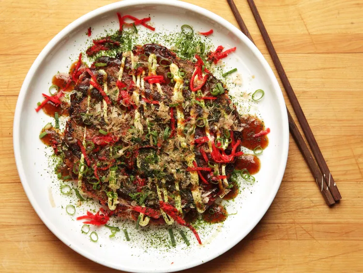

Okonomiyaki (savory pancackes)
Recipe
Ingredients:
- 1/2 small head cabbage, finely shredded (about 4 packed cups; 14 ounces; 400 g)
- 3 scallions, thinly sliced, dark green parts reserved separately
- 2 ounces (50 g) beni-shoga (Japanese pickled red ginger), divided (see notes)
- 1/2 ounce (15 g) katsuobushi, divided (see notes)
- 1/4 pound (120 g) yamaimo, peeled and grated on the smallest holes of a box grater (optional; see notes)
- 2 large eggs
- 1/2 cup (120 ml) cold water or dashi (or use cold water with 2 teaspoons Hondashi; see notes)
- 3/4 cup all-purpose flour (3 3/4 ounces; 110 g)
- 8 to 10 thin slices uncured pork belly (optional; see notes)
- 2 tablespoons (30 ml) vegetable oil (if not using pork belly)
- Ao-nori, okonomiyaki sauce, and Kewpie mayonnaise, for serving (see notes)
Instructions:
- Combine cabbage, scallion whites and half of greens, half of beni-shoga, 3/4 of katsuobushi, yamaimo, eggs, and water (or dashi) in a large bowl. Sprinkle with flour. Stir with a fork and beat heavily until a thick batter with plenty of bubbles forms. Set aside.
- If using pork belly, cover the bottom of a 10-inch nonstick skillet with pork belly and set over medium heat. Add okonomiyaki mixture and spread into an even layer with a fork. If not using pork belly, heat vegetable oil in skillet over medium heat until shimmering. Add okonomiyaki mixture and spread into an even layer with a fork.
- Cover and cook, shaking pan occasionally, until bottom layer is crisp and well browned, about 10 minutes, lowering heat as necessary if cabbage threatens to burn.
- To flip, drain off any excess fat, then, working over a sink and holding the lid tightly against pan with a pot holder, flip entire pan and lid over so that okonomiyaki transfers to pan lid. Remove pan, then carefully slide okonomiyaki off lid and back into pan, browned side up.
- Return to heat, cover, and continue to cook, shaking gently, until both sides are browned and okonomiyaki is not runny but still custardy and tender in the center, about 8 minutes longer. Transfer to a serving platter, pork side up.
- Drizzle with okonomiyaki sauce and mayonnaise; sprinkle with ao-nori, remaining beni-shoga, remaining katsuobushi, and remaining scallion greens; and serve immediately off of a communal plate.
Special equipment:
10-inch nonstick skillet
Notes:
This is a simple base recipe. You can add other ingredients, such
as diced shrimp, thinly sliced Chinese sausage, corn kernels, or
other vegetables (shred or chop other vegetables) as desired. Try
to keep the total weight of additional ingredients to under 1/2
pound (225g).
This recipe requires a few specialty ingredients. Beni-shoga is red pickled ginger; it can be omitted or replaced with the regular, finely chopped pickled ginger you serve with sushi. Katsuobushi is dried, smoked, and shaved bonito; it comes in both large and thin shavings. The large shavings are typically used for making dashi. Look for the finely shaved version. (It can also be omitted.) Yamaimo is Japanese mountain yam, a long root vegetable with thin, light brown skin and a slippery internal texture. (It can be omitted.) Hondashi is granulated dashi powder. (Water can be used in its place.)
Bacon can be used instead of uncured pork belly, but it will make the okonomiyaki much more difficult to flip. If using bacon, carefully run a flexible rubber spatula under the edges of the okonomiyaki and shake it to loosen it before attempting to flip. Pork can also be entirely omitted.
Ao-nori is powdered green sea laver. (It can be replaced with finely shredded nori.) Okonomiyaki sauce is a sweet and savory sauce. (It can be replaced with Bull-Dog sauce or equal parts Worcestershire sauce and ketchup seasoned with soy sauce.) Kewpie mayonnaise is a Japanese-style sweet mayonnaise. (It can be replaced with regular mayonnaise.) All ingredients can easily be found in a Japanese specialty market.